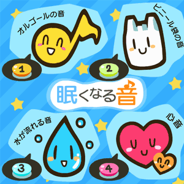

<!-- main -->
<div id="main">

<div id="kyouzai">

<div class="block">
<h3>赤ちゃんの夜泣きやぐずりに･･･<br />｢眠くなる音｣</h3>

<p>7〜9ヵ月ファミリー386人への｢赤ちゃんが眠れた音｣のアンケートで上位4位までの音がダウンロードできます。</p>
</div><!-- /.block -->

<div class="block">
<p class="play">■使い方<br />Flashをダウンロードしていただければ､何度も繰り返し音が聞けます｡<br />
<p class="red">※赤ちゃんに聞かせるときは､耳に直接当てないでください｡必ず、携帯スピーカーにして離して聴かせてください。</p>
<p class="tx_gray">協力/日本電産サンキョー商事</p>
</div><!-- /.block -->

<a href="src/sound_tool_android.swf" data-role="button" data-theme="e" rel="external">ダウンロード</a>
<br />

</div><!-- /#kyouzai -->

</div><!-- /#main -->